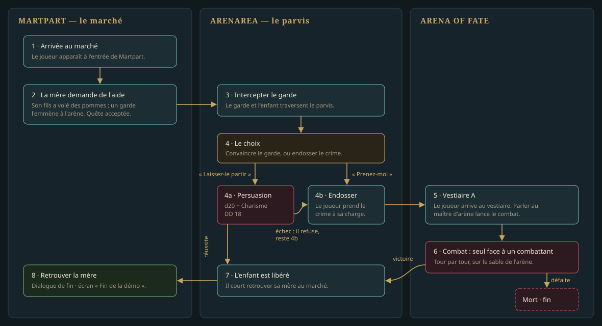

LOT-120 La quête « Des pommes pour l'arène »
La quête de la démo, jouable de bout en bout par ses trois issues.
- État
- livré
- Filière
- Quêtes et dialogues
- Taille
- M
- Ordre calculé
- —
- Reprend
- —
Livrables
- La quête en données : un drapeau à cinq valeurs, huit étapes.
- Quatre dialogues : la mère (ouverture, clôture), le garde (choix et jet), le maître d'arène, l'enfant.
- La rencontre de l'arène, équilibrée par simulation, et la fiche du combattant (
Rpg/), joué par le mannequin humanoïde ; sa figurine est au LOT-113. - Les textes en français et en anglais.
Critères d'acceptation
- Les trois issues se jouent en test système, sans fenêtre, à graine fixée.
- Sur cent combats simulés avec le héros de la démo, il l'emporte entre 60 et 70 fois.
- Un joueur qui ne connaît pas le projet finit la démo sans aide.
Maquettes
{kind=link}

Le déroulé, les drapeaux, les PNJ et l'équilibrage sont dans la fiche de la quête.
La quête se joue sur les cartes de principe du LOT-146, où ses cinq PNJ sont déjà posés avec leurs conditions de présence ; ils y sont des mannequins (LOT-145) ou des jetons, jusqu'à leurs figurines de la 0.0.3 (D-25). Ce lot écrit ce qu'ils disent et ce qui se joue.
Décisions de réalisation
Livré le 25 septembre 2026, avec le LOT-146 dans la même branche, sur décision de l'auteur.
- Un drapeau à cinq valeurs, six étapes.
quete.pommes:inconnue,acceptee,persuasion-echouee,condamne,enfant-libere. Les étapes lisent le monde :acceptee,condamne,enfant-liberepar la valeur ;persuasion-echoueepar le fait durable du jet raté (dialogue/garde/jet-persuasion/failed,LOT-117), parce que le dialogue écrase la valeur avant qu'un pas ne la lise ;victoirepar le fait de la rencontre gagnée, et son effet poseenfant-libere;renduepar le fait que pose la mère, issuesuccess. La huitième étape annoncée n'existe pas : une défaite finit la démo sans laisser de quête à avancer. - La victoire pose
encounter/<rencontre>/won(core::encounterWonFlag, danscore::endEncounter). Une rencontre engagée par un dialogue n'avait aucune clé (LOT-118, D6) et rien ne pouvait relier sa victoire à la quête ; le fait compte parmi ceux qu'un dialogue pose (core::flagsWrittenBy), et la mère en fait sa condition pour nommer la voie de la fin. - Le DD de la Persuasion est le degré « moyenne » (15). Le format n'écrit qu'un degré nommé (
EX-REG-021), et 18 n'en est pas un ; avec le Brawler (Persuasion −1), c'est une chance sur quatre, mesurée par le test — la voie de l'arène reste le chemin attendu, comme la fiche de la quête le voulait. - Le combattant est une créature originale du bestiaire (
combattant-de-l-arene, CA 14, 16 pv, +4, 1d6+2, mannequin humanoïde), équilibrée par simulation : sur cent combats à graines 1 à 100, les deux camps joués par l'IA, le héros l'emporte entre 60 et 70 fois ; sur mille graines tirées d'une graine maîtresse, entre 600 et 700. Le test du bestiaire compte désormais les 94 profils du SRD et admet les créaturesoriginal. - « Nouvelle partie » entre dans la démo. Un plan de la Capitale provisoire (
World/cities/capital.json,status.provisoire) ouvre Martpart et Arenarea, Martpart en départ au point d'arrivéemarket-gate;check_rpg_data.pyn'exige un plan complet que d'une ville qui ne se dit pas provisoire. Le plan complet, ses dix quartiers fermés et leurs sentinelles sont auLOT-121(0.0.3). - Le hasard se fixe des deux côtés.
DialogueModel.seedfixe la graine de la prochaine conversation (0 : le compteur du jeu), commeEncounterModel.seedcelle du combat : les tests système forcent l'issue du jet par la graine, pas par un modificateur. - Trois tests, trois niveaux.
IntegrationTestsjoue la chaîne sans fenêtre parhmi::WorldPlayetcore::DialogueRunner(trois issues, équilibrage) ;SystemGameTests(étiquettesysteme, application Qt sans fenêtre) rejoue ce que les écrans font — « Nouvelle partie », les dialogues, la rencontre, l'écran de mort, l'écran de fin — de Market Gate à chaque fin, une graine par issue ; les probabilités se mesurent sur des graines tirées, à la manière d'un fuzzer. - Le maître d'arène attend sur le sable, et le condamné marche jusqu'à l'escalier : voir les décisions 2 et 3 du
LOT-146.
Livraison
La quête, ses quatre dialogues et leurs textes (fr, en), la rencontre et le combattant, le plan de ville provisoire, les tests d'intégration, système et d'équilibrage. Reste due par l'auteur : la lecture de la démo à l'écran (« un joueur qui ne connaît pas le projet finit la démo sans aide »), et le choix des noms des trois PNJ du marché, que les textes désignent par leur rôle.
Source : Planning/versions/v0.1.0/v0.0.1-demo/lots/LOT-120-quete-des-pommes-pour-l-arene.md